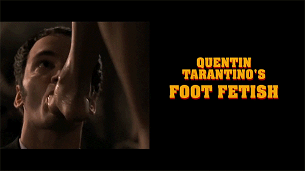
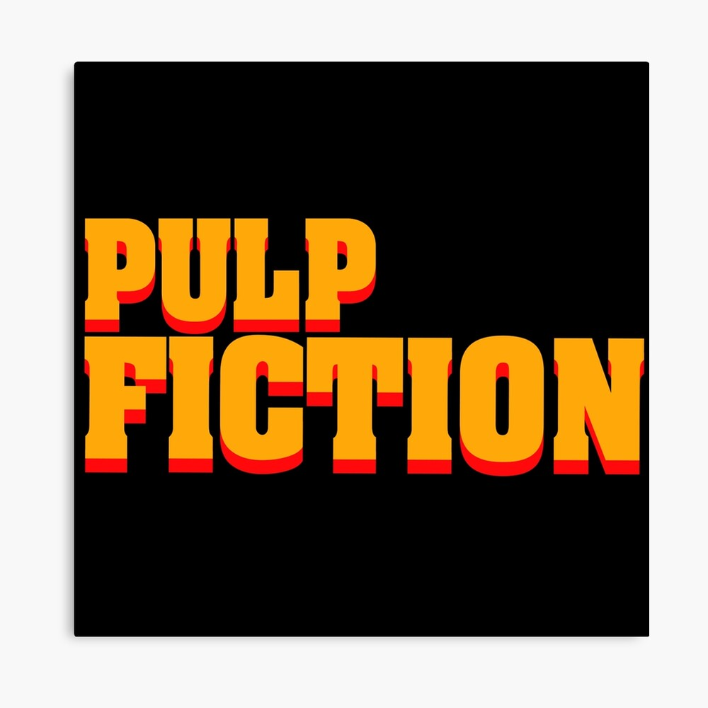
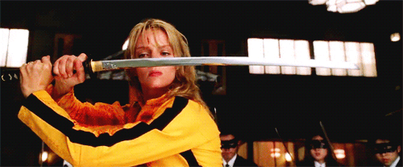
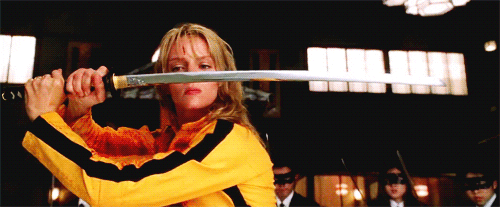

declared 2007’s
“death proof” the worst movie he’s ever made.”
mike, a hollywood stuntman,
kills women and makes it look like a car accident. his plan works for several
years until he meets a group of girls who are all set to fight back. two
separate sets of voluptuous women are stalked at different times by a scarred
stuntman who uses his "death proof" cars to execute his murderous plans.
"get ready to fly bitch"
tarantino’s not saying
is bad, just that he likes it the least of all the movies he’s made.
“death proof”s whole scenario is recycled from stock horror and thriller
materials, but it’s also littered with Tarantino’s personal touches.
stuntman mike seems to select his victims by looking for women who stick
their bare feet
out their car windows. In fact, most of the first half of the film right up
until the big car crash feels like some kind of distilled tarantino fantasy
of the perfect night out.
an
old question has arisen again: what’s up with tarantino and feet?
death proof took it a bit further with jungle julia’s leg being
chopped and flying out of the car, and with mike mcKay later on
touching and licking abethany ross’ feet. tarantino has a foot fetish
and is not shy about it.

the car is driving fast down the road. a pair of female bare feet with a gold ankle bracelet lie
propped up on the dashboard emanating from the passenger seat.~ good god
almighty rockabilly tune beats out of the car stereo, the feet tap to the beat.
the opening credits play out over this image, as the music continues.
imdb 7/10
a few jewish soldiers are on an
undercover mission to bring down the nazi government and put an end to
the war. meanwhile, a woman wants to avenge the
death of her family from a german officer.
“i’m
going to give you something you can’t take off.”
bizarre, bold, and bloody,
there's no denying that
 has all the vim, vigor, and excitement of quentin tarantino's other films.
a young woman’s face appears on a movie screen, gigantic in close-up and
starkly black and white, interrupting a nazi propaganda movie. in a paris
theatre, where hitler and other nazi officials are attending the german
film’s premiere, the haunting screen image of shosanna dreyfus tells them,
“you are all going to die.” she has set a fire that will kill them, unaware
that her plot overlaps with a US-and-british military operation to blow up
the theatre.
“inglourious basterds
set off a new pattern in tarantino’s career: rewriting the past.”
“the film contains one of
the most realistic, suspenseful sequences tarantino has ever created.”
“inglourious basterds does
not ask us to deny reality. it uses cinema to expand our imaginations.”
has all the vim, vigor, and excitement of quentin tarantino's other films.
a young woman’s face appears on a movie screen, gigantic in close-up and
starkly black and white, interrupting a nazi propaganda movie. in a paris
theatre, where hitler and other nazi officials are attending the german
film’s premiere, the haunting screen image of shosanna dreyfus tells them,
“you are all going to die.” she has set a fire that will kill them, unaware
that her plot overlaps with a US-and-british military operation to blow up
the theatre.
“inglourious basterds
set off a new pattern in tarantino’s career: rewriting the past.”
“the film contains one of
the most realistic, suspenseful sequences tarantino has ever created.”
“inglourious basterds does
not ask us to deny reality. it uses cinema to expand our imaginations.”
shosanna dreyfus, female, french.
“my name is shosanna
dreyfus and this is the face... of jewish vengeance!”
hans landa, male, nazi germany.
“i love my unofficial title,
precisely because i have earned it.”
we hear
the sound of the german musical’s climax. the lights go up
in the auditorium. shosanna, dressed in a nurse’s uniform she swiped
from somewhere, remains seated, as the rest of the patrons gather
their coats and file out.
in nazi-occupied france during world war
II, a plan to assassinate nazi leaders by a group of jewish US
soldiers coincides with a theatre owner's vengeful plans for the
same.
imdb 8.3/10
pulp fiction & reservoir dogs are connected. reservoir dogs and pulp
fiction are also connected by two other characters, though this one
is not as obvious or widely-known as the vega brothers, mr. white
larry dimmick and jimmie dimmick.
“i wrote reservoir dogs out of frustration.”
six criminals, hired to steal diamonds, do not know each other's true
identity. while attempting the heist, the police ambushes them,
leading them to believe that one of them is an undercover officer.
“saying you don’t like violence in movies is like saying you
don’t
like tap-dancing sequences in movies.”
nothing around
though, has aged quite as badly as its original reviews. the only
thing mr. tarantino spells out is the violence. this movie isn’t really
about anything, it’s just a flashy, stylistically daring exercise in cinematic mayhem.
these are the two canards that everyone seemed to agree upon, and they were the stances
on which the tarantino-bashing industry would be based. one, that his work was ultraviolent,
and two, that it was about nothing more than its own movieishness, with no connection
to the real world.
writer-director quentin tarantino and cinematographer andrzej sekula
detail their approach to shooting what would become a classic crime tale.
“i just wasn’t as good as i thought i was going to be, and i more or
less decided to look at the project as a learning experience,”
both tarantino and sekula offered enthusiastic
assessments of their future together.
imbd 8.3/10
the lives of two mob hitmen, a boxer, a gangster and his wife,
and a pair of diner bandits intertwine in four tales of violence
and redemption. in the realm of underworld, a series of incidents
intertwines the lives of two Los Angeles mobsters, a gangster's wife,
a boxer and two small-time criminals.
quentin tarantino is the jerry lee Lewis of cinema, a
pounding performer who doesn't care if he tears up the piano, as long
as everybody is rocking. his new movie

is a comedy about blood, guts, violence, strange sex, drugs, fixed
fights, dead body disposal, leather freaks, and a wristwatch that
makes a dark journey down through the generations.
it is tarantino's strategy in all of his films to have the characters
speak at right angles to the action, or depart on flights of fancy.
remember the famous opening conversation between jules and vincent,
who are on their way to a violent reprisal against some college kids
who have offended wallace and appropriated his famous briefcase.
they talk about the drug laws in Amsterdam, what Quarter Pounders are
called in paris, and the degree of sexual intimacy implied by a foot
massage. finally Jules says "let's get in character, and they enter
an apartment.
“english motherfucker, do you speak it?”
brilliantly written and unfathomably cool, this would make a
good case for most quotable crime movie of all time.
imdb 8.9/10
a faded television actor and his stunt double strive to achieve fame and
success in the final years of hollywood's golden age in 1969 los angeles.
rick, a washed-out actor, and cliff, his stunt double, struggle to
recapture fame and success in 1960s los angeles. meanwhile, living next
door to Rick is sharon tate and her husband roman polanski.
it’s hardly surprising that this, perhaps the most “tarantino-esque” of
all quentin tarantino’s movies to date, is a love letter to hollywood. who
has been more vocal about his passion for the movies, in all their glorious
(and inglourious) variety, than tarantino? and who has been more promiscuous
with his affections, flirting with everything from grindhouse and exploitation
flicks to martial arts, westerns and second world war adventures?

quentin tarantino has been burnt by his script being stolen and published before,
now, he's taking extreme precaution...
“hey your rick fucling dalton.
don't you forget it!”
imdb 7.6/10
for a simple premise and multi-layered characters, tarantino's
expert style and execution makes his eighth film an enjoyable experience.
is a hilarious, suspenseful, bloody and masterful epic.
It might also just be the year's best film.
in the dead of a wyoming winter, a bounty hunter and his prisoner
find shelter in a cabin currently inhabited by a collection of nefarious
characters.
a bounty hunter and his captured fugitive are caught in the middle of a
snowstorm. they seek refuge at a small lodge and encounter a twisted turn
of events there.
the hateful eight is a story about putting your differences aside to
do the right thing. in this case, "the right thing" was a form of grim,
western justice.
it's tarantino's eighth movie and his worst by a widescreen, a boring,
self-indulgent mess that squanders a big chunk of the goodwill he's built
up with cinephiles by shooting on film and supporting independent theaters.
quentin tarantino's ultraviolent, ultra-talky sorta-Western
is an
impressive display of film craft and a profoundly ugly movie, so gleeful in
its violence and so nihilistic in its world view that it feels as though the
director is daring his detractors to see it as a confirmation of their worst fears.
imdb 7.8/10
after awakening from a four-year coma, a former assassin wreaks vengeance
on the team of assassins who betrayed her.
a former assassin, known simply as the bride, wakes from a coma four years after her
jealous ex-lover bill attempts to murder her on her wedding day.
fueled by an insatiable desire for revenge, she vows to get even with
every person who contributed to the loss of her unborn child, her entire
wedding party, and four years of her life. After devising a hit list,
the bride sets off on her quest, enduring unspeakable injury and unscrupulous enemies.
with the recent revelations surrounding thurman’s experience filming
 from the car accident tarantino forced her to film that left her with
lasting injuries, to her accounts of the director spitting on her and
choking her in place of actors during certain scenes. the two-part movie’s
legacy takes on a different cast. But even as some viewers repelled by
these stories are inclined to turn on Tarantino, they should think twice before turning on

from the car accident tarantino forced her to film that left her with
lasting injuries, to her accounts of the director spitting on her and
choking her in place of actors during certain scenes. the two-part movie’s
legacy takes on a different cast. But even as some viewers repelled by
these stories are inclined to turn on Tarantino, they should think twice before turning on

“revenge is a dish best served cold.”
“before this
tale of bloody revenge reaches its climax, i'm going to ask you some questions.” ...
ok, if you are a fan of tarintino, then this is your film.
if you are looking for family film bull crap, go see something else.
this is a hard core action film...
imdb 8.1/10